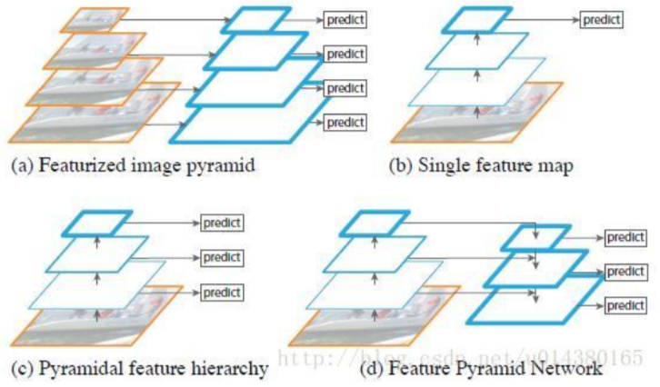
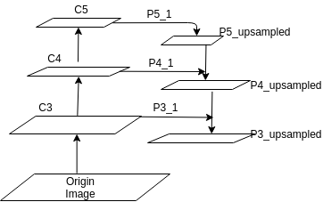
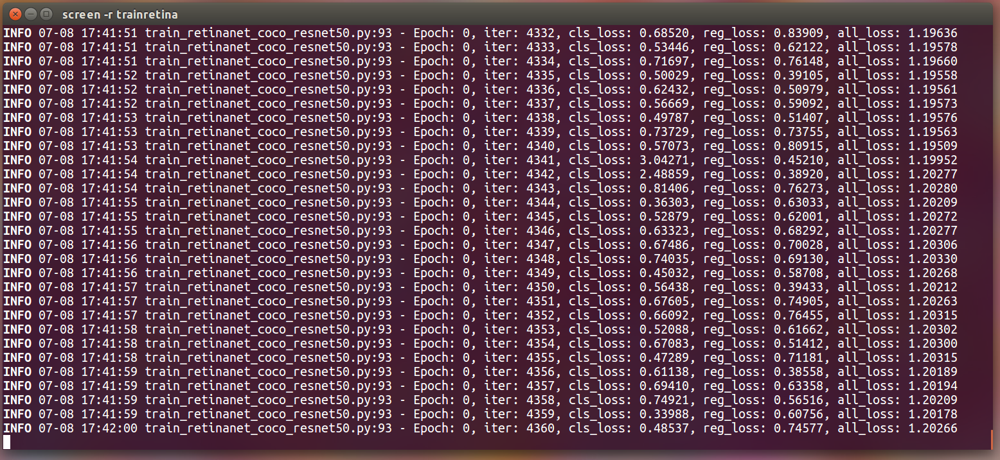

RetinaNet:TensorFlow2.0从零到实现
本文介绍 RetinaNet: TensorFlow2.0从零到实现
FPN+SSD精度与速度兼修的检测器从零到实现
This article was original written by Jin Tian, welcome re-post, first come with https://jinfagang.github.io . but please keep this copyright info, thanks, any question could be asked via wechat:
jintianiloveu
在不久之前，写了一篇从零实现YoloV3的的文章，采用的是最新的tensorflow2.0的API，踩了不少坑。给我最大的感觉就是，速度够快，但实现绝非简单，且不容易训练，至今没有非常完美的把loss收敛到一个极低值。上周在Pytorch上实现了很多先进一阶段目标检测算法从训练到纯C++预测，比如M2Det，RFBNet，Pelee，将这些方法整理到了一个framework下，从训练到推理，都是武装到牙齿的优化，几乎涵盖了所有可能的应用领域，比如高精度需求场景、高速度需求场景、移动侧场景等。这些一阶段算法都非常优秀，尤其是像Pelee这样的模型非常小的网络，其结果不输FasterRCNN，相关代码我们将会在神力aI放出，传送门.
而与此同时，我想起了一个一直一来被误解很深的目标检测算法：RetinaNet。误解的原因是它结合了很多一阶段算法的优点，但不能直接的看作是类似于SSD的算法, 也不能简单的将它看成是FasterRCNN的后现代方法, 因为它受到SSD的影响更大, 简单来说, 它可以看做是SSD+FPN的结合。
RetinaNet值得借鉴的东西实在是太多了, 这也是我们决定写这篇教程的原因. 但我们不会按照RetinaNet原始的版本去实现, 而是会加入很多我们自己的思考, 总结来说:
- 我们希望实现一个可以work的FPN+SSD架构的检测器;
- 我们希望它的精度可以匹配FasterRCNN;
- 我们希望可以通过更改它的regression module, 改造成回归RBox的检测器, 也就是: FPN+RSSD;
- 我们希望通过增加一个Mask head实现一个类似于maskrcnn的MaskSSD实例分割框架.
一阶段算法无论设计的多么复杂，精细，似乎都无法摆脱基于priorbox和anchor的暴力回归方式所带来的目标和背景样本极度不均衡的问题，这也是RPN结构是区分二阶段和一阶段的重要标志，因为它可以干掉一些由于样本极度不均衡所带来的问题。RetinaNet没有在RPN中一条路走到黑, 而是积极借鉴一阶段方法的优点, 同时引入FPN去复杂化SSD的featuremap regression部分, 使得它能handle的scale更多, 而且它比SSD更加柔软, 它没有像SSD一样粗暴的用1:3来均衡正负样本, 而是采用FocalLoss来动态的选择不同的loss. 本篇教程将会尽可能的用上上述所有的insights, 我们力图打造一个武装到牙齿的高精度同时兼顾速度的检测器.
考虑到很多计算机视觉的入门者，总是从比较古老的算法入手，比如FasterRCNN，却不知道许多算法已经在这些经典的基础之上进行了很多改进和优化。为此，我便想实现一遍RetinaNet，以引导入门者往更先进的地方着手，当你掌握了更先进的方法，回过头去看旧方法时，你才会体会到一种恍然大悟为什么不那么做的感觉.
如果你跟着本篇教程来入手二阶段检测方法，这里我可以给你几点优势或者理由：
- RetinaNet绝对是精度很高的方法，你可以看作是FasterRCNN的进化版，MaskRCNN的前奏；
- 它除了一些微小的改进，整体上与经典的FasterRCNN差别并不大。
- 它首次引入了FPN的思想，掌握它，你能够在面试的时候说出很多东西，这也是企业考察一位求职者对该领域掌握程度的一个重要知识点。
跟随本教程，你可能会有一些意外的收货，比如我们会带你踩很多坑，但我们也会把你从坑里拽出来。最后，我们的最终目标是，在RetinaNet的基础之上，我们将会进一步的实现MaskRCNN，同时我们也会考虑一些使得RetinaNet更加轻的方法，比如采用更加轻量级的骨干架构，采用更少的FPN等等。
FPN+SSD检测器理论
在开始之前，还是得对RetinaNet相关的体系架构有所了解。在介绍RetinaNet细微的结构之前, 我先假定本文的读者都是计算机视觉的入门者 (据我观察大部分是入门者), 当你们看到RetinaNet的时候或多或少会有陌生感, 因为这个方法出镜率没有一些经典方法诸如FasterRCNN, SSD, DPM高. 但第一点你必须要知道的是, RetinaNet是上述方法技巧的改进版本, 在速度和精度上都胜过了FasterRCNN, 当然也包括许多一阶段检测方法.
其次, 无论是一阶段还是二阶段检测算法, 本质上都会具有两个分支, 一个用来回归, 一个用来分类. 唯一的区别只在于, 二阶段算法具备一个RPN的模块, 也就是我们常说的, Region Proposal. 在这里进行二分类, 把大部分背景干掉. RetinaNet其实跟SSD的结构几乎一模一样, 只不过它加了FPN, 我们先来看看SSD结构是啥样的:

总结这个one stage核心架构如下:
- 它从骨干网络中, 若干个尺度的featuremaps提取特征;
- 这些特征将分别进入到loc model和cls model回归坐标和类别;
- 训练时通过预先设定的Anchor或者说是PriorBox对GT进行编码, 对网络输出进行回归;
- 预测时, 对网络的输出进行解码, 得到真实尺寸, 通过nms之后得到最终检测结果.
整个流程非常流畅, 比FasterRCNN简单很多. 那我们要做的是什么呢?
- SSD有了, 即使从0开始难度也不大;
- FPN似乎没有, 看来我们得实现它.
ok, 那么FPN是啥呢? 现在很多人都知道用融合特征的思想去做检测优化, 但实际上人家SSD从若干年以前就是这么做的, 再这么做意义不大. 而FPN似乎在这个基础上更进一步, 它不仅仅做特征融合, 还引入了一个编码和解码的思想 (未来是不是还得加上attention? 又或是加上transform?). 让我们来看看这部分FPN长啥样:

这张图其实展示的很清楚, 所谓的FPN 也就是特征金字塔, 总结起来可以如下:
- 这个玩意儿不是单纯的尺度变小然后挨个分支出来, 而是先压缩, 再增大, 然后同层级的进行融合;
- 整体结果相对来说比较简单.
OK. 理论分析玩了之后, 我们发现其实也并没有想象的那么复杂.
FPN的简单实现
先上code:
|
|
然后再讲解code.

从这张图我们可以看出网络的脉络和数据流:
- 首先我们从backbone的最后三层拿到featuremaps, 这三层如何选择呢, 通常情况下我们采用尺度诸如128 256 512大小的featuremap, 足够大才能保留更多的分辨率;
- 然后我们经过一个从地向上, 然后从上到下的结果, 用专业术语来讲就是bottom-up and top-down的结构. 经过一些复杂的操作, 我们最终可以拿到我们需要的柔和之后的featuremaps;
- 事实正面, 这种融合之后的特征可以大大的增强我们的检测器精度.
Regression part
再详细的讲解一下我们的回归部分应该怎么写. 其实很多时候regression模块也被人写作是 regression head, 简单来说它就是一个很精简的头部网络. 它简单到你不用花太多的心思来设计它. 只需要让他满足输出的尺度为:
num_priors * 4 * w *h
即可. 换句话说, 只要它能输出按照要求的尺度框就够了.
之所以把这个单独的模块拿出来, 是因为我们后面要对这个head进行一些骚气的变化, 我们想要尝试通过修改回归器让检测器回归RBox, 也就是带有旋转角度的矩形框. 这比单纯的矩形框更进一步, 但也没有任意四边形那么复杂. 具体我们再后面几期会进行讲解, 我们看看regression是如何实现的:
|
|
可以说十分的简约了.
由于这个regression的输出是要用来解码的, 因此它的大小必须和我们的priorbox大小一致. 这和SSD的框架是一模一样的.
Focal Loss
最后是重要的focal loss环节. 其实一个完整版本的focal loss实现还需要一些复杂的技术细节, 在这里我们仅仅从理论上来分析一下, 我们如何实现它. 首先对于focal loss, 很多人有误解的, 经常听到这样的言论: 我的模型加入了focal loss好像并没有什么卵用.
其实focal loss具有两个可调节的参数, alpha 和 gama. 很多人使用的时候应该使用的默认值, 而这两个值其实跟数据集有很大的关系, 未通过实验去设定显然是难有效果.
Focal loss作用主要是两点:
- 防止detector被训废掉. 这在一阶段检测网络里面很普遍, 网络跑着跑着就不收敛了, 最后效果不好. 这是因为对背景过拟合了. focal loss可以让背景这样的好预测的样本对loss的贡献变小, 从而让网络花更多精力去学习难以预测的正常目标;
- 自动化的解决一阶段检测器正负样本不均衡的问题.
训练
本教程具体的代码会在下一期给出, 欢迎大家收藏文章, 关注专栏, 订阅我们的系列文章. 在完成本小节教程之时, 我们已经事先看看网络的训练效果:

我们将会在下一期教程中更新最新的模型训练结果, 以及整理之后的代码. 欢迎大家收藏订阅专栏! 本系列教程的最终目标是:
- 探索FPN在目标检测中的应用, 并实现一个武装到牙齿的检测器;
- 探究对Regression Head修改为拟合带旋转框的目标检测器的可能性;
- 探究后续加入Mask head将FPN+SSD网络改造为MaskSSD的可能性.
最后文章末尾插播一个广告:
许多初学者在入门人工智能的时候, 通常会走很多弯路. 为了带领大家规避荆棘, 直通康庄大道, 我们花了大量的人力物力, 实现并维护了许多开箱急用的AI算法, 其实包括CV, NLP, 以及各大领域比如自动驾驶, 通用目标检测, 智能安防等算法. 欢迎大家从这里开始你的AI之旅: http://manaai.cn . 同时我们也欢迎大家加入我们的AI交流社区: http://talk.strangeai.pro
下期继续!
- 原文作者：金天
- 原文链接：https://jintian93.github.io/post/2019_07_08_11_RetinaNet_TensorFlow2.0%E4%BB%8E%E9%9B%B6%E5%88%B0%E5%AE%9E%E7%8E%B0/
- 版权声明：本作品采用知识共享署名-非商业性使用-禁止演绎 4.0 国际许可协议进行许可，非商业转载请注明出处（作者，原文链接），商业转载请联系作者获得授权。